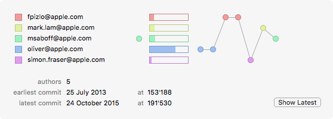

The legend window is displayed automatically when annotations are enabled and have been read from the repository.

The legend displays four columns of information:
Users
The user names and colors of the team members that have contributed to current state of the file. The colors correspond to those used to display the sections in the annotation gutter.
Uncommitted changes in modified working files are displayed as a pseudo-user named Uncommitted
Colors are computed separately for the users in each file (or pair of files when comparing). As a result, the color used to represent a particular user may differ between files.
Recent Activity
Indicates how recently each user has worked on this file. This column can be used to quickly gain an overview of who has been working on a file recently.
The last committer (i.e. the user that committed the current revision) is indicated with a filled circle .
Users other than the last committer that have worked on the file in the past month are indicated with a small circle .
All other users that last contributed to the file more that one month ago are indicated with an empty circle .
Lines Contributed
The percentage of lines contributed by that user, as a percentage.
This column can be used to quickly gain an overview of who is most responsible for the contents of the file.
Timeline
The fourth column uses a timeline to graphically indicate the temporal relationship between commits made by the file’s various contributors.
Revisions are displayed in chronological order from left to right.
The timeline can be used to navigate within the file. To activate a revision
select a revision by clicking on the revision’s circular icon in the timeline;
or
click the Show Latest button at the bottom of the legend window to select the changes committed in the latest revision.
The active revision is highlighted in the timeline:
The timeline does not display the file’s log history. Instead, it shows only those revisions that contributed to contents of the file in its current state. Therefore any previous modifications that have been completely removed from the file will not appear in the timeline.